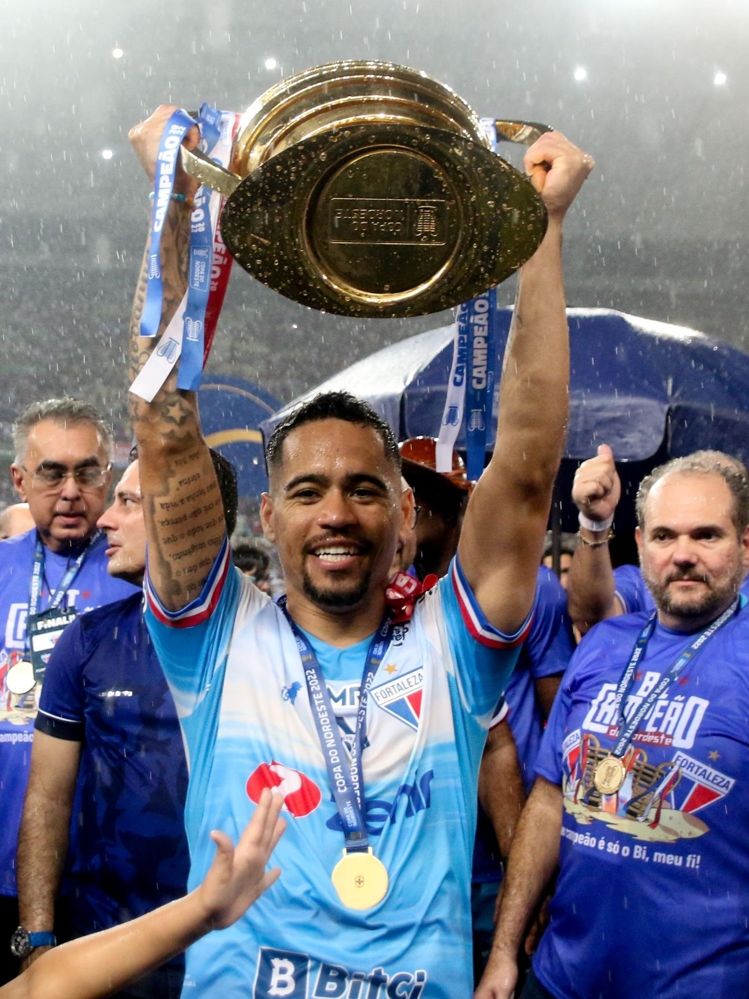
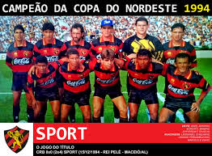
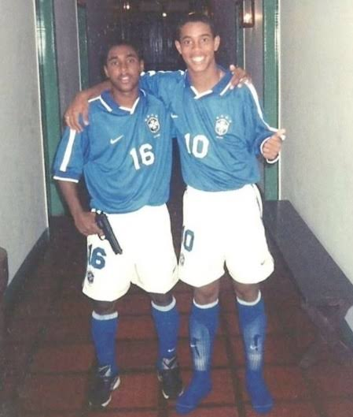

Campeonato Copa Do Nordeste
A Copa do Nordeste de Futebol (também conhecida como Nordestão, Campeonato do Nordeste e Lampions League) é uma competição de futebol disputada entre equipes dA Copa do Nordeste de Futebol (também conhecida como Nordestão, Campeonato do Nordeste e Lampions League) é uma competição de futebol disputada entre equipes da Região Nordeste do Brasil. Considerado um dos campeonatos regionais mais importantes do país (por alguns, o mais importante), o "Nordestão" foi uma competição intermitente no calendário do futebol brasileiro em seus primeiros anos. Organizada oficialmente pela primeira vez em 1994, o torneio foi disputado continuamente entre 1997 e 2003, época em que passou a ser organizado pela Confederação Brasileira de Futebol (CBF). Teve quase todas suas edições canceladas entre 2004 e 2012, com exceção da edição de 2010. Retornou novamente ao calendário do futebol brasileiro em 2013.Nas 19 edições realizadas, houve nove clubes campeões. Bahia e Vitória (clubes rivais de Salvador, que duelam o clássico Ba-Vi) são os maiores vencedores do "Nordestão", com quatro títulos cada. O Sport, o Ceará e o Fortaleza foram campeões em 3 oportunidades. América de Natal, Campinense, Santa Cruz e Sampaio Corrêa possuem uma conquista cada.
Entre as edições de 1997 e 1999, o campeão garantiu também uma vaga na Copa Conmebol, mas a partir das edições de 2000 até 2013 o campeão não garantiu vaga porque a Copa Conmebol foi extinta. Entre as edições de 2014 a 2016, os campeões obtiveram vaga para a Copa Sul-Americana do mesmo ano. em 2017 a 2019, o campeão garantiria vaga direta nas oitavas de final da Copa do Brasil do ano seguinte. A partir de 2020, o campeão também obtém vaga no torneio nacional do ano seguinte, só que na terceira fase.
Considerado um dos campeonatos regionais mais importantes do país (por alguns, o mais importante), o "Nordestão" foi uma competição intermitente no calendário do futebol brasileiro em seus primeiros anos. Organizada oficialmente pela primeira vez em 1994, o torneio foi disputado continuamente entre 1997 e 2003, época em que passou a ser organizado pela Confederação Brasileira de Futebol (CBF). Teve quase todas suas edições canceladas entre 2004 e 2012, com exceção da edição de 2010. Retornou novamente ao calendário do futebol brasileiro em 2013.
